Luồng sale & event (cơ bản)
Bản đọc nhanh cho người mới vào dự án: Magic Sort kiếm tiền và giữ chân người chơi bằng những gì, các sự kiện chạy theo vòng đời nào, và một buổi chơi thật trông ra sao.
- Số liệu lấy từ config server đã cache trên máy (Firebase Remote Config + backend Grand Games, bản 0.0.3129) và từ buổi chơi thử ngày 07/10/2026 trên LDPlayer.
- Ảnh là ảnh chụp thật trong game, bấm để phóng to. Ảnh ghi "ép bật" là tính năng server đang tắt cho tài khoản thử, được bật tạm trên máy để chụp.
- Giá VND là giá Google Play hiển thị cho tài khoản Việt Nam; giá USD là
dollarEquivalenttrong config.
1. Kinh tế trong một trang
Tóm lại: chỉ có một loại tiền là coin. Coin mua mạng, mua booster và mua lượt chơi tiếp khi kẹt. Thắng màn cho 20 / 60 / 100 coin tùy độ khó; mọi thứ còn lại đến từ sự kiện và gói IAP.
| Hạng mục | Giá trị (config gameEconomyModel) |
|---|---|
| Mạng | Tối đa 5, hồi 1 mạng / 30 phút; mua đầy (Refill) 900 coin |
| Chơi tiếp khi kẹt (Play On) | 900 → 1.900 → 2.300 coin cho lần 1, 2, 3 trong cùng một màn |
| Booster mua lẻ | Undo 300, Shuffle 300, +Bottle 900, Mega Shuffle 900, Reveal 900 coin |
| Thưởng thắng màn | Thường 20, Hard 60, Super Hard 100 coin |
| Người chơi mới | 1.000 coin, mỗi booster 3 cái, mở booster ở level 15 |
| Quy đổi | Gói coin rẻ nhất: 1.000 coin = 1,99 USD (62.000 VND), tức 1 lượt Play On đầu ≈ 1,8 USD |
Một lượt Play On đắt gần bằng gói coin nhỏ nhất. Vì vậy điểm kẹt là nơi chốt sale quan trọng nhất (xem mục 3).

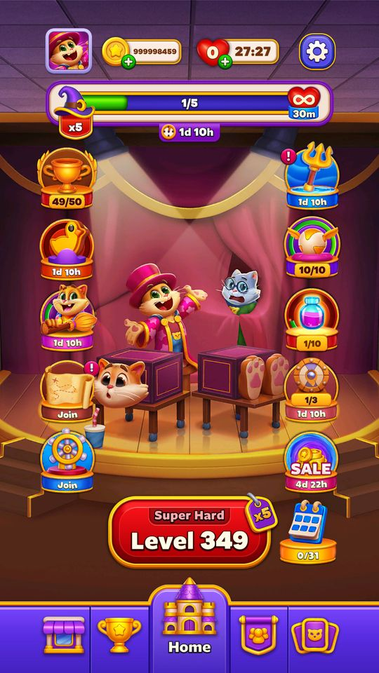


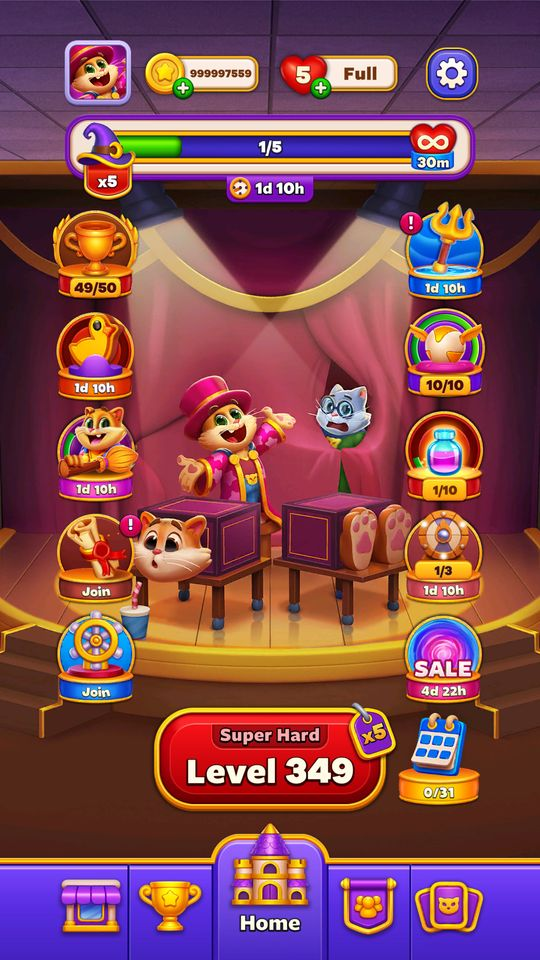

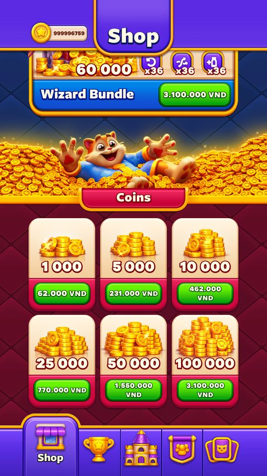
2. Vòng lặp một màn chơi
Tóm lại: mỗi màn kết thúc bằng một trong ba nhánh: thắng, kẹt rồi trả coin để chơi tiếp, hoặc bỏ cuộc. Nhánh nào cũng đưa người chơi về Home qua một chuỗi popup sự kiện.
1. Vào màn từ nút Level ở Home. Màn Hard có đầu lâu và nhãn x3, Super Hard có 3 đầu lâu và nhãn x5: vật phẩm sự kiện (vịt, bản đồ, đinh ba, mũ) nhân theo hệ số này. 2. Kẹt ("No Available Moves"): popup Play On 900 coin thêm 1 ống, hoặc Give Up. 3. Bỏ cuộc: game hiện lần lượt các popup giữ chân, mỗi popup nhắc một thứ sẽ mất (chuỗi thắng, mạng, hạng giải) và đều có nút Play On. 4. Thắng: logo MAGIC SORT, rồi popup "PERFECT!" kèm coin; dải dưới cùng chạy tiến độ sự kiện chuỗi thắng đang mở. 5. Về Home: chuỗi popup sự kiện chạy theo thứ tự cố định (mục 5).


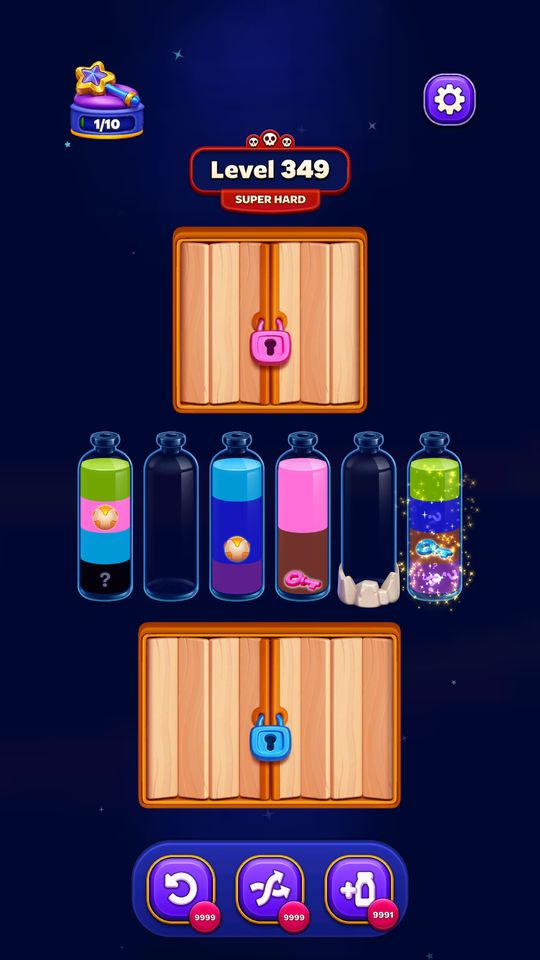


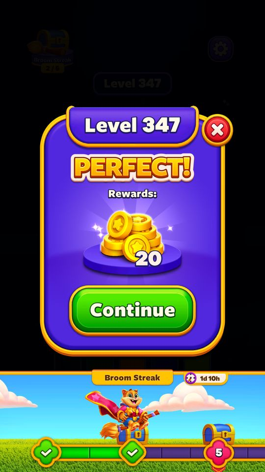

3. Sáu lớp bán hàng
Tóm lại: game bán theo 6 lớp, từ cửa hàng luôn mở tới các offer chỉ hiện đúng lúc người chơi cần nhất.
| Lớp | Bán gì | Xuất hiện khi | Ví dụ thật (07/10) |
|---|---|---|---|
| 1. Shop thường trực | Starter Bundle, 5 Magic Bundle, 6 gói coin | Luôn có trong tab Shop | Starter -90% 31.000 VND, Wizard 3.100.000 VND |
| 2. Offer giới hạn thời gian | Special Offer theo chủ đề, Choose One, One+Free | Server phát theo phân khúc; tự bật khi về Home | Heavenly Deal -90% 31.000 VND, còn 23 giờ |
| 3. Offer gắn sự kiện | Endless Portal, Treasure Drill, Magic Pass, Trident Deal | Khi sự kiện tương ứng chạy | Endless Portal ô trả tiền 81.000 VND; Treasure Drill 62.000 VND |
| 4. Điểm kẹt | Play On bằng coin, Paw Touch Offer, Ego offer | Hết nước đi, hết giờ, hết mạng | Play On 900 coin; More Lives Refill 900 coin |
| 5. Quảng cáo | Interstitial, rewarded, gói No Ads | Interstitial từ level 61, cách nhau ≥ 240 giây | Quảng cáo xen kẽ sau màn thắng; rewarded +1 Life |
| 6. Coin sink trong sự kiện | Coin để giữ chuỗi, mua mạng trong lúc đua | Khi đang có tiến độ sự kiện | "Continue? You will lose your streak!" — Play On 900 |

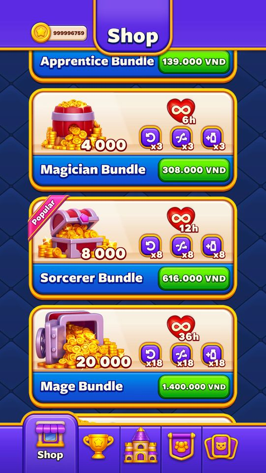


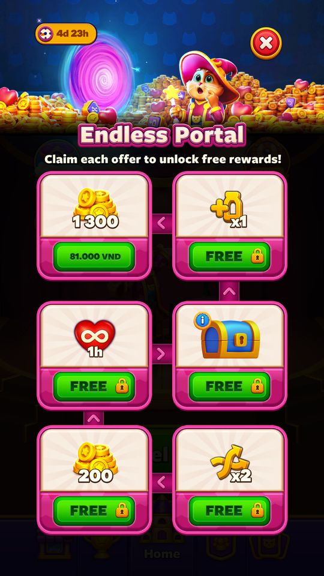


4. Các họ sự kiện
Tóm lại: khoảng 25 sự kiện, chia 6 họ. Hầu hết lấy tiến độ từ chính việc thắng màn, nên một màn thắng có thể đẩy 5–8 sự kiện cùng lúc.
| Họ | Sự kiện | Mở từ level | Cách chơi | Trạng thái 07/10 |
|---|---|---|---|---|
| Chuỗi thắng | Broom Streak, Tower Win Streak, Magic Streak, Sky Jump (3 chặng), Jetpack Race | 25–120 | Thắng liên tiếp để leo mốc; thua là rớt về checkpoint hoặc mất hệ số | Broom, Magic Streak, Sky Jump đang chạy |
| Đua / xếp hạng | Boat Rush, Duck Festival, Weekly Cup, Master League, Team Arena | 40–300 | Ghép bảng với người chơi khác, thắng màn để vượt lên | Boat Rush, Duck Festival, Weekly, Master League đang chạy |
| Nhiệm vụ & meta | Wheel of Fortune, Magic Lab, Collection, Journey | 95–150 | Làm nhiệm vụ lấy lượt quay, sưu tầm thẻ, nhận quà mốc level | WoF, Collection, Journey đang chạy |
| Mini game | Underwater Treasures, Merge Bakery | 100–140 | Dùng vật phẩm kiếm từ màn chơi để đập ô / merge | Underwater đang chạy |
| Trợ giúp trong màn | Snitch, Super Charger, Magic Bottle | 11–200 | Thắng 10 màn để kích hoạt; mất khi thua | Server tắt cả 3 (ép bật để chụp) |
| Pass / trả phí | Treasure Drill, Magic Pass, Endless Portal | 44–110 | Mua để mở thưởng theo mốc | Treasure Drill, Endless Portal đang chạy |
Home chỉ hiện tối đa 4 icon cột trái và 5 icon cột phải. Khi có nhiều sự kiện hơn chỗ trống, sự kiện xếp sau trong danh sách ưu tiên bị ẩn. Ảnh dưới: bật thêm Snitch và Magic Bottle thì icon Heavenly Deal biến mất.


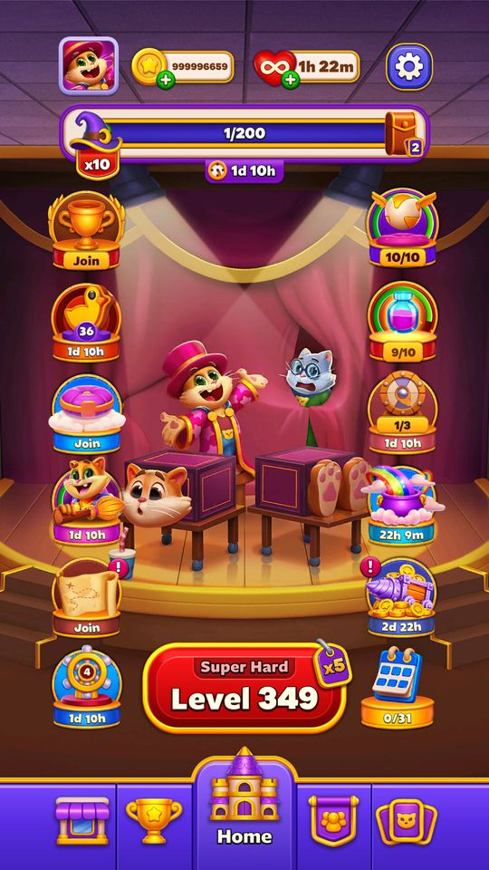

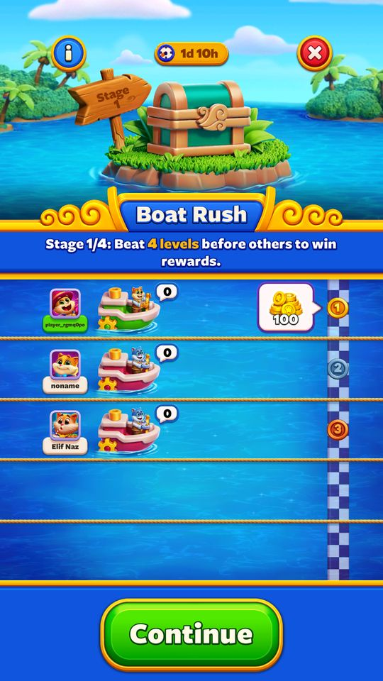

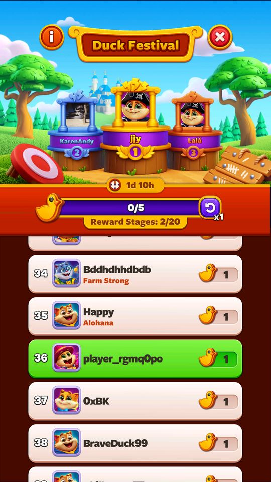

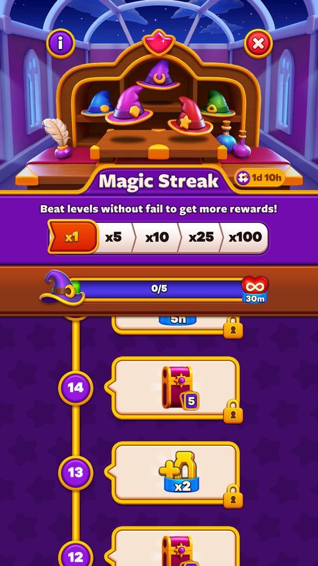

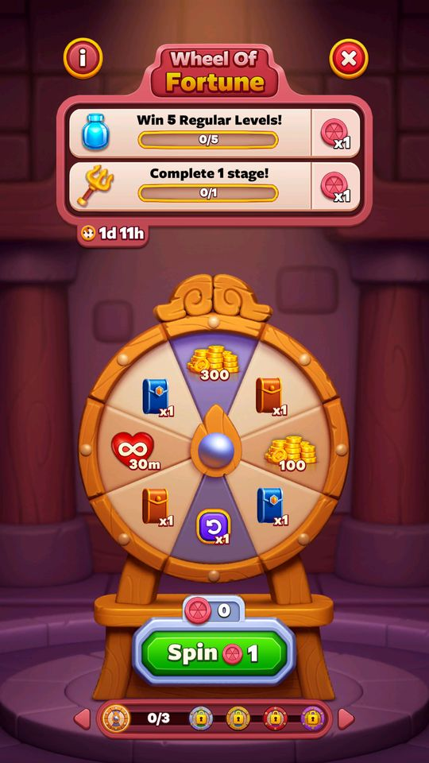

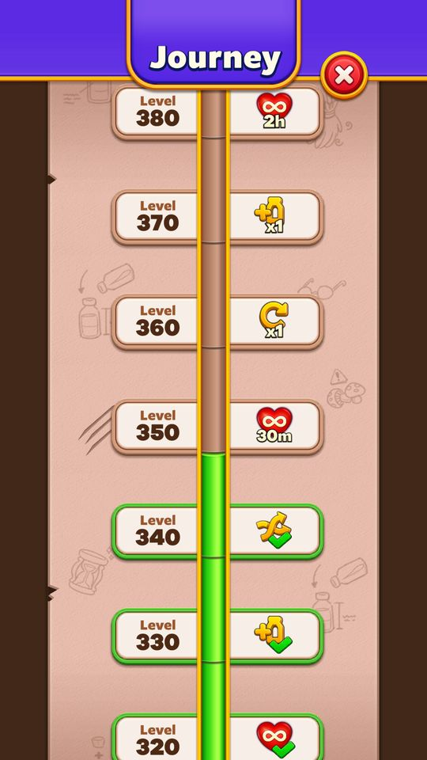
5. Vòng đời một sự kiện
Tóm lại: mọi sự kiện đi qua cùng một chuỗi trạng thái. Người chơi thấy 3 bước: luật chơi lần đầu, nút Join, rồi màn hình tiến độ.
1. Tắt / chưa đủ level / chưa có dữ liệu: không hiện gì. Server bật bằng cờ IsEnabled trong config, client kiểm tra FirstLevelToShow, rồi lấy lịch phiên từ backend. 2. Chưa giới thiệu: lần đầu về Home sau một màn, game bật popup luật chơi (ví dụ Boat Rush, Duck Festival, Treasure Drill). 3. Join: bấm Join thì được ghép bảng; nhiều sự kiện tặng ngay 30 phút mạng vô hạn khi Join. 4. Đang chạy: icon Home hiện tiến độ hoặc thứ hạng; thắng màn thì vật phẩm bay vào icon. 5. Hết giờ (máy) → hết giờ (server) → nhận thưởng: nhận thưởng hạng/mốc, rồi chờ phiên mới.


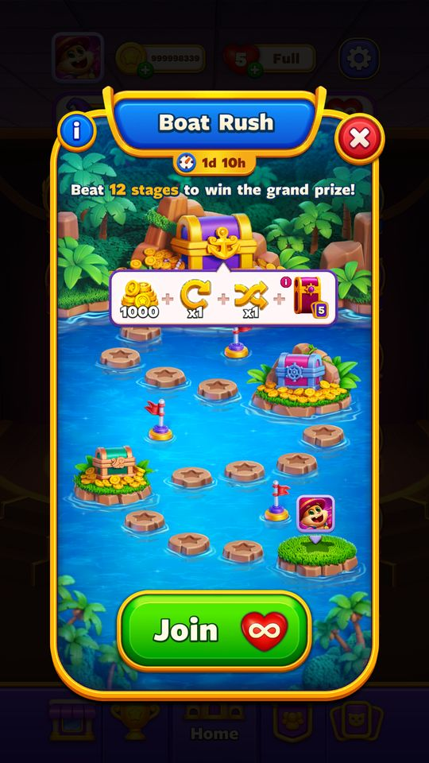

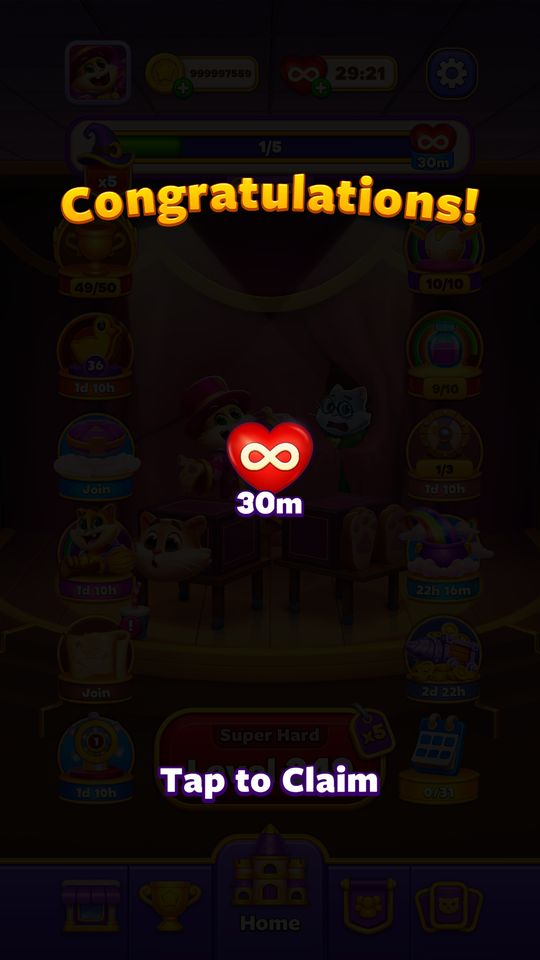

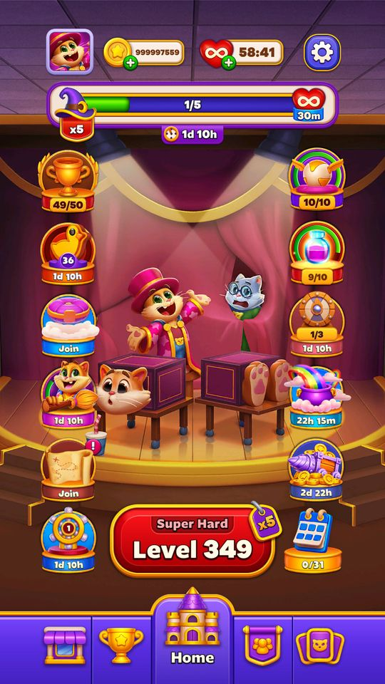


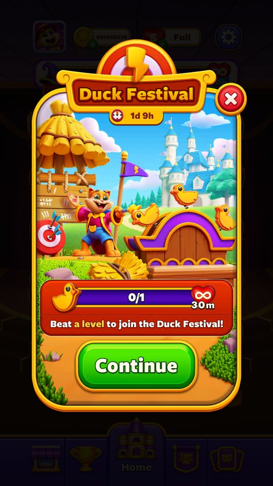

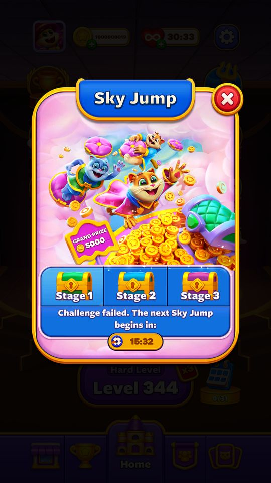

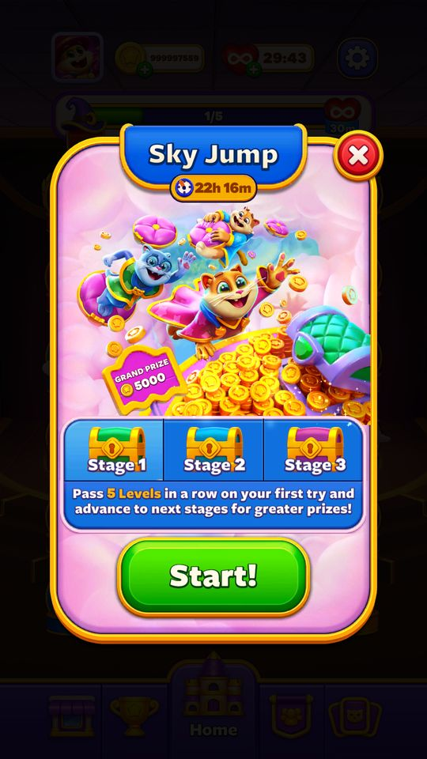
6. Một buổi chơi thật (07/10, level 343 → 351)
Tóm lại: chỉ 7 màn thắng đã kéo ra gần 30 popup sự kiện và offer. Thứ tự hiện đúng như danh sách ưu tiên trong code.
| Sau màn | Popup hiện ra khi về Home (theo thứ tự) |
|---|---|
| 346 (khởi động lại game) | Broom Streak mở rương mốc 2 → nhận gói thẻ → mở 2 thẻ mới |
| 347 | Luật Super Charger → popup Super Charger → Magic Streak → Snitch kích hoạt → Magic Bottle → luật Boat Rush → Join Boat Rush → luật Duck Festival → Duck pre-join → Daily Challenge |
| 348 | Hệ số Magic Streak x1 → x5 → luật Treasure Drill → Treasure Drill (gói 62.000 VND) → Wheel of Fortune nhận token → Team Quest → tab Teams |
| 349 (Super Hard) | Nhận 30 phút mạng vô hạn (Magic Streak) → Journey mốc 350 → Magic Bottle kích hoạt → Master League Join → Weekly Cup |
Config đặt homeReturnPopupShowLimit = 2, nhưng popup luật chơi lần đầu và popup nhận thưởng vẫn hiện hết. Giới hạn này chỉ chặn các popup chào bán, không chặn popup giới thiệu.


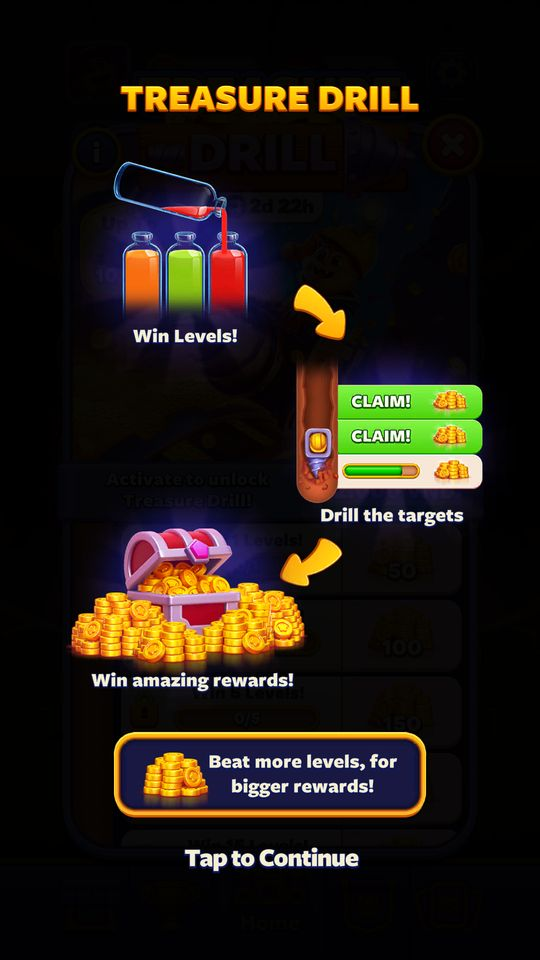

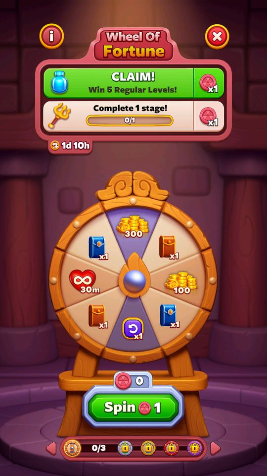

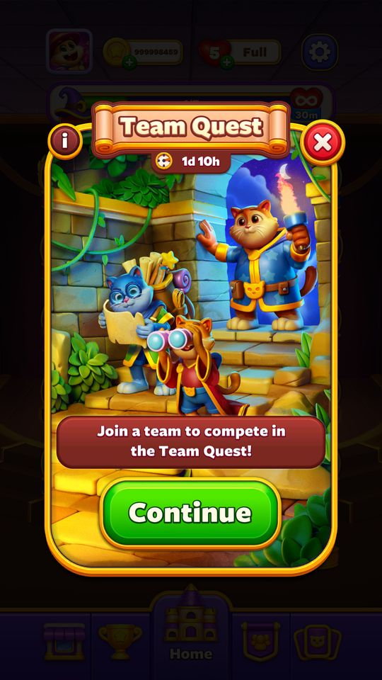

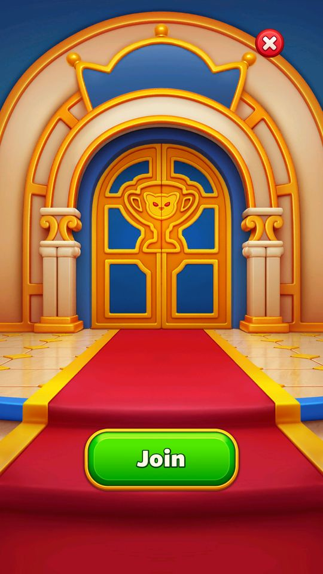

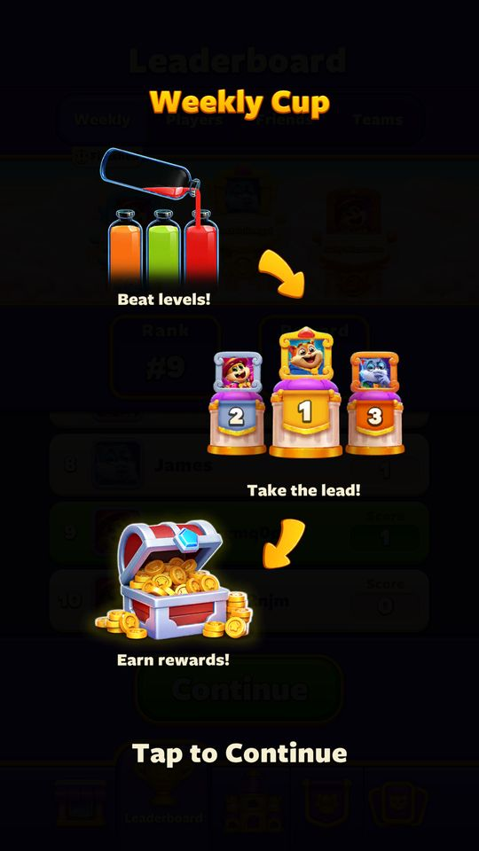
7. Lịch sự kiện của tài khoản thử
Lịch đọc từ cache trên máy lúc 15:00 ngày 07/10/2026 (giờ UTC). Segment của tài khoản: non-purchaser.
| Sự kiện | Bắt đầu | Kết thúc | Ghi chú |
|---|---|---|---|
| Boat Rush | 05/10 07:00 | 08/10 19:00 | 3,5 ngày; Join được sau màn thắng đầu tiên |
| Underwater Treasures | 05/10 07:00 | 08/10 19:00 | Cùng nhịp với Boat Rush |
| Magic Streak | 05/10 07:00 | 08/10 19:00 | Cùng nhịp |
| Team Quest | 05/10 07:00 | 08/10 19:00 | Cần có đội |
| Duck Festival | 07/10 01:00 | 08/10 19:00 | Phiên ngắn ~42 giờ |
| Treasure Drill | 05/10 07:00 | 10/10 07:00 | 5 ngày |
| Endless Portal | 05/10 07:00 | 12/10 07:00 | 7 ngày |
| Special Offer (Heavenly Deal) | 07/10 07:00 | 08/10 07:00 | 24 giờ |
| Daily Bonus | 07/10 07:00 | 08/10 07:00 | Theo ngày |
| Master League | 05/10 07:00 | 19/10 07:00 | 2 tuần |
| Collection | 25/08 09:00 | 23/11 09:00 | ~3 tháng |
Nhịp chung: phần lớn sự kiện mở thứ Hai 07:00 UTC (14:00 giờ VN) và đóng thứ Năm 19:00 UTC; offer 24 giờ đổi lúc 07:00 UTC mỗi ngày.